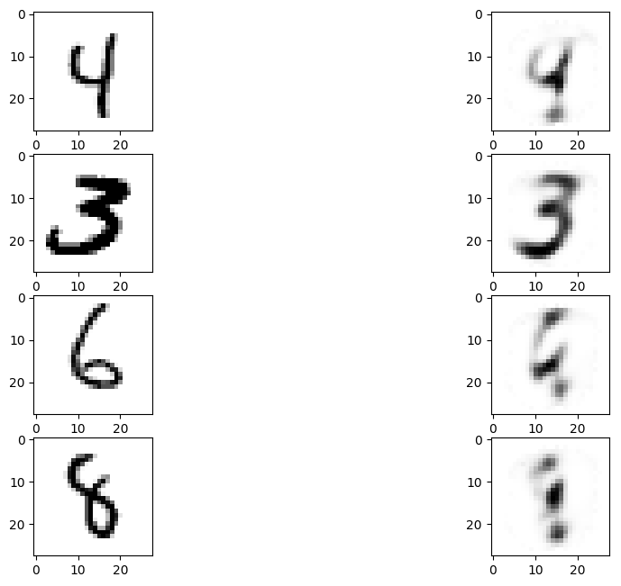

Python 2.7.13 (default, Jan 13 2017, 10:15:16)
Type "copyright", "credits" or "license" for more information.
IPython 5.3.0 -- An enhanced Interactive Python.
? -> Introduction and overview of IPython's features.
%quickref -> Quick reference.
help -> Python's own help system.
object? -> Details about 'object', use 'object??' for extra details.
Restarting kernel...
In [1]: runfile('/data/PROJECTS/THESISProject/CODE/mnist_dae.py', wdir='/data/PROJECTS/THESISProject/CODE')
Main information
[ALGORITHM] Momentum
[OPTION] batch_size = 128
[OPTION] verbose = True
[OPTION] epoch_end_signal = None
[OPTION] show_epoch = 1
[OPTION] shuffle_data = False
[OPTION] step = 0.25
[OPTION] train_end_signal = None
[OPTION] error = rmse
[OPTION] addons = None
[OPTION] momentum = 0.99
[OPTION] nesterov = True
[THEANO] Initializing Theano variables and functions.
[THEANO] Initialization finished successfully. It took 14.93 seconds
Start training
[TRAINING DATA] shapes: (60000, 784)
[TEST DATA] shapes: (10000, 784)
[TRAINING] Total epochs: 100
------------------------------------------------
| Epoch # | Train err | Valid err | Time |
------------------------------------------------
| 1 | 0.2642 | 0.2444 | 00:00:13 |
| 2 | 0.228 | 0.2387 | 00:00:14 |
| 3 | 0.2119 | 0.2413 | 00:00:14 |
| 4 | 0.2026 | 0.2384 | 00:00:13 |
| 5 | 0.1953 | 0.2379 | 00:00:13 |
| 6 | 0.1901 | 0.2371 | 00:00:13 |
| 7 | 0.1863 | 0.2361 | 00:00:13 |
| 8 | 0.1834 | 0.2345 | 00:00:13 |
| 9 | 0.181 | 0.2336 | 00:00:13 |
| 10 | 0.1791 | 0.2318 | 00:00:14 |
| 11 | 0.1774 | 0.2309 | 00:00:14 |
| 12 | 0.176 | 0.2299 | 00:00:14 |
| 13 | 0.1749 | 0.2281 | 00:00:14 |
| 14 | 0.174 | 0.2271 | 00:00:14 |
| 15 | 0.1733 | 0.2252 | 00:00:14 |
| 16 | 0.1724 | 0.2231 | 00:00:14 |
| 17 | 0.1715 | 0.2214 | 00:00:14 |
| 18 | 0.1711 | 0.2202 | 00:00:14 |
| 19 | 0.1704 | 0.2181 | 00:00:14 |
| 20 | 0.1698 | 0.2167 | 00:00:14 |
| 21 | 0.1696 | 0.2151 | 00:00:14 |
| 22 | 0.1691 | 0.2131 | 00:00:14 |
| 23 | 0.1687 | 0.2115 | 00:00:14 |
| 24 | 0.1687 | 0.2112 | 00:00:14 |
| 25 | 0.1683 | 0.2073 | 00:00:14 |
| 26 | 0.1678 | 0.2052 | 00:00:14 |
| 27 | 0.1676 | 0.2039 | 00:00:14 |
| 28 | 0.1679 | 0.2009 | 00:00:14 |
| 29 | 0.1675 | 0.1993 | 00:00:14 |
| 30 | 0.1668 | 0.1985 | 00:00:14 |
| 31 | 0.1667 | 0.1962 | 00:00:14 |
| 32 | 0.1665 | 0.1937 | 00:00:14 |
| 33 | 0.1664 | 0.1943 | 00:00:14 |
| 34 | 0.166 | 0.1896 | 00:00:14 |
| 35 | 0.1658 | 0.1902 | 00:00:14 |
| 36 | 0.1662 | 0.1869 | 00:00:14 |
| 37 | 0.1656 | 0.187 | 00:00:14 |
| 38 | 0.1657 | 0.1847 | 00:00:14 |
| 39 | 0.1655 | 0.1831 | 00:00:14 |
| 40 | 0.1651 | 0.182 | 00:00:14 |
| 41 | 0.1652 | 0.1824 | 00:00:14 |
| 42 | 0.1653 | 0.1813 | 00:00:14 |
| 43 | 0.1655 | 0.1789 | 00:00:14 |
| 44 | 0.1647 | 0.1767 | 00:00:14 |
| 45 | 0.1651 | 0.177 | 00:00:14 |
| 46 | 0.1656 | 0.1766 | 00:00:14 |
| 47 | 0.1648 | 0.1741 | 00:00:14 |
| 48 | 0.1648 | 0.1754 | 00:00:14 |
| 49 | 0.1648 | 0.1737 | 00:00:14 |
| 50 | 0.1646 | 0.1736 | 00:00:14 |
| 51 | 0.1652 | 0.1736 | 00:00:14 |
| 52 | 0.165 | 0.1737 | 00:00:14 |
| 53 | 0.1657 | 0.1733 | 00:00:14 |
| 54 | 0.1644 | 0.1734 | 00:00:14 |
| 55 | 0.1642 | 0.1741 | 00:00:14 |
| 56 | 0.1648 | 0.1718 | 00:00:14 |
| 57 | 0.1641 | 0.1714 | 00:00:14 |
| 58 | 0.1643 | 0.1732 | 00:00:14 |
| 59 | 0.1644 | 0.1736 | 00:00:14 |
| 60 | 0.1639 | 0.1733 | 00:00:14 |
| 61 | 0.1647 | 0.1757 | 00:00:14 |
| 62 | 0.1646 | 0.1748 | 00:00:14 |
| 63 | 0.1636 | 0.1736 | 00:00:14 |
| 64 | 0.1635 | 0.1763 | 00:00:14 |
| 65 | 0.1635 | 0.1762 | 00:00:14 |
| 66 | 0.1645 | 0.178 | 00:00:14 |
| 67 | 0.1641 | 0.1763 | 00:00:14 |
| 68 | 0.1636 | 0.1778 | 00:00:14 |
| 69 | 0.1644 | 0.1805 | 00:00:14 |
| 70 | 0.1635 | 0.1792 | 00:00:14 |
| 71 | 0.1634 | 0.1789 | 00:00:14 |
| 72 | 0.1642 | 0.1808 | 00:00:14 |
| 73 | 0.1633 | 0.184 | 00:00:14 |
| 74 | 0.1632 | 0.1856 | 00:00:14 |
| 75 | 0.1642 | 0.1826 | 00:00:14 |
| 76 | 0.1641 | 0.1831 | 00:00:14 |
| 77 | 0.164 | 0.1857 | 00:00:14 |
| 78 | 0.1633 | 0.1872 | 00:00:14 |
| 79 | 0.1635 | 0.1867 | 00:00:14 |
| 80 | 0.164 | 0.1881 | 00:00:14 |
| 81 | 0.1637 | 0.194 | 00:00:14 |
| 82 | 0.1632 | 0.1865 | 00:00:14 |
| 83 | 0.1637 | 0.1896 | 00:00:14 |
| 84 | 0.1638 | 0.1935 | 00:00:14 |
| 85 | 0.1627 | 0.1998 | 00:00:14 |
| 86 | 0.1639 | 0.1914 | 00:00:14 |
| 87 | 0.164 | 0.1955 | 00:00:14 |
| 88 | 0.1639 | 0.1929 | 00:00:14 |
| 89 | 0.164 | 0.2063 | 00:00:14 |
| 90 | 0.1632 | 0.2037 | 00:00:14 |
| 91 | 0.1642 | 0.1944 | 00:00:14 |
| 92 | 0.1638 | 0.1981 | 00:00:14 |
| 93 | 0.1644 | 0.2001 | 00:00:14 |
| 94 | 0.1632 | 0.2074 | 00:00:14 |
| 95 | 0.1635 | 0.2031 | 00:00:14 |
| 96 | 0.1645 | 0.1978 | 00:00:15 |
| 97 | 0.163 | 0.2128 | 00:00:14 |
| 98 | 0.1633 | 0.2043 | 00:00:14 |
| 99 | 0.164 | 0.2044 | 00:00:14 |
| 100 | 0.1627 | 0.2095 | 00:00:14 |
------------------------------------------------

In [2]: import dill
In [3]: dill.dump_session()
In [4]: dill.dump_session('mnist_dae.dill')
In [5]: